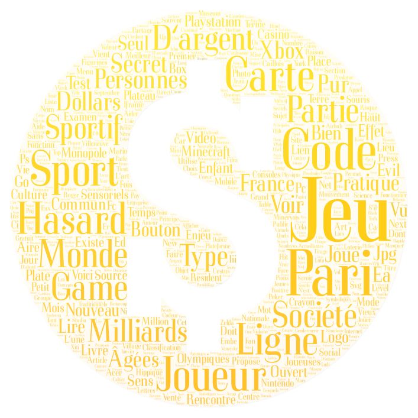

Nuage de mots
Afin de créer ces nuages de mots, nous avons utilisé le site X. Pour créer ces nuages de mots nous avons utilisé un fichier contexte pour chaque langue contenant les extraits de nos corpus qui contiennent le mot "jeu" au centre. Par la suite, nous avons choisi trois images en rapport avec le thème du jeu pour créer les masques. Pour rendre le résultat plus clair et pertinent, nous avons retiré certains mots grammaticaux (déterminants, conjonction, prépositions, copules...).
Nuage de mots anglais :
Nuages de mots chinois :
Nuages de mots français :
